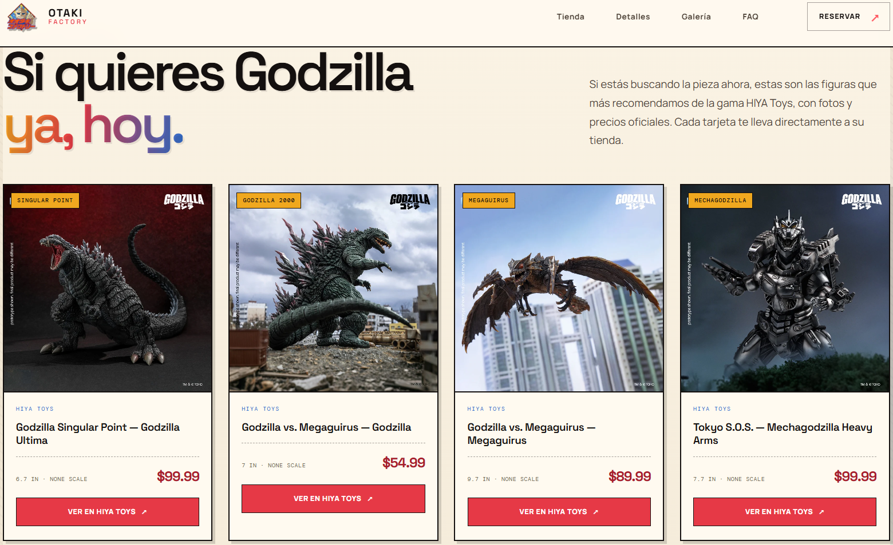

Operaciones auxiliares para la configuración y la explotación
Configuración básica y explotación de sistemas informáticos en entorno profesional.
Hola, soy
Técnico en formación — Informática y Comunicaciones
Estudiante entusiasmado por querer aprender cosas nuevas y ayudar a los demás. Me apasiona el desarrollo web asistido por IA y estoy en búsqueda activa de prácticas de empresa para poner en práctica lo aprendido y seguir creciendo.
Solicitar entrevistaConocimientos adquiridos durante mi formación y práctica.
Configuración básica y explotación de sistemas informáticos en entorno profesional.
Puesta en marcha, cableado y mantenimiento de redes de datos.
Instalación, configuración y actualización de sistemas operativos.
Creación de páginas y landing pages apoyado en herramientas de IA, HTML, CSS y Vercel.
Trabajos realizados durante mi formación y proyectos personales.

Una página hecha por IA para vender un producto de afiliados.
Ver proyecto Online¿Quieres conocer más sobre mí o colaborar? Escríbeme.